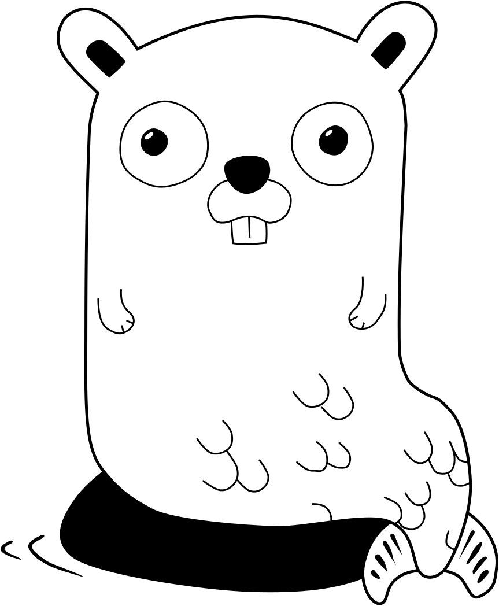

Copenhagen Golang Meetup Group

Meetups are announced at meetup.com/go-cph
Tweeting at @CphGophers
Talking in the #cphgophers channel in the Gophers Slack org (signup link)
Slides and resources from talks and presentations on GitHub